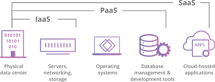
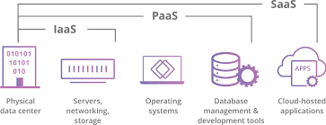

"La nube" hace referencia a los servidores a los que se accede a través de Internet, y al software y bases de datos que se ejecutan en esos servidores. Los servidores de la nube están ubicados en centros de datos por todo el mundo. Con la informática en la nube, no es necesario que los usuarios y las empresas gestionen los servidores físicos ni que ejecuten aplicaciones de software en sus propios ordenadores.
La nube permite a los usuarios acceder a los mismos archivos y aplicaciones casi desde cualquier dispositivo, ya que los procesos informáticos y de almacenamiento tienen lugar en servidores en un centro de datos, y no de forma local en el dispositivo del usuario. Por ello, un usuario puede iniciar sesión en su cuenta de Instagram con un teléfono nuevo después de que se le haya averiado el anterior y seguirá teniendo acceso a su cuenta de siempre, con sus fotos, vídeos y el historial de conversación. Funciona igual con proveedores de correo electrónico en la nube como Gmail o Microsoft Office 365, y con proveedores de almacenamiento en la nube como Dropbox o Google Drive.
Para las empresas, el cambio a la computación en la nube supone menos gastos generales y de TI: por ejemplo, ya no tendrán que actualizar y mantener sus propios servidores, ya que su proveedor de la nube lo hará por ellos. Esto tiene un especial impacto en las pequeñas empresas que no tienen la capacidad de pagar su propia infraestructura interna, pero que pueden externalizar sus necesidades de infraestructura por poco dinero mediante la nube. Además, la nube puede facilitar que las empresas operen a nivel internacional, ya los empleados y clientes pueden acceder a los mismos archivos y aplicaciones desde cualquier lugar.
"La nube" surgió como un término de jerga en el sector tecnológico. En los albores de Internet, los diagramas técnicos solían representar con una nube a los servidores y a la infraestructura de red que formaban Internet. A medida que más procesos informáticos se iban trasladando a esta parte de infraestructura y servidores de Internet, se empezó a hablar de trasladar a "la nube" como una forma abreviada de expresar el lugar en el que se llevaban a cabo los procesos informáticos. Hoy en día, "la nube" es un término ampliamente aceptado para este tipo de computación.
Los modelos de servicio de computación en la nube se basan en el concepto de compartir información, software y recursos de procesamiento bajo demanda en Internet. Las empresas o las personas pagan para acceder a un grupo virtual de recursos compartidos, incluidos los servicios de procesamiento, almacenamiento y herramientas de redes, que se encuentran en servidores remotos que son propiedad de los proveedores de servicios y son administrados por ellos.
Una de las muchas ventajas de la computación en la nube es que solo pagas por lo que usas. Esto permite que las organizaciones escalen con mayor rapidez y eficiencia sin la carga de comprar y mantener sus propios centros de datos físicos y servidores.
En términos más simples, la computación en la nube usa una red (por lo general, Internet) para conectar a los usuarios con una plataforma en la nube en la que solicitan y acceden a servicios de computación alquilados. Un servidor central controla toda la comunicación entre los dispositivos y los servidores del cliente para facilitar el intercambio de datos. Las funciones de seguridad y privacidad son componentes habituales para proteger esta información.
Cuando se adopta la arquitectura de computacióón en la nube, no hay una solución universal. Lo que funciona para otra empresa puede no satisfacer tus necesidades ni las de tu empresa. De hecho, esta flexibilidad y versatilidad es uno de los sellos distintivos de la nube, lo que permite a las empresas adaptarse con rapidez a mercados o métricas cambiantes.
Existen tres modelos diferentes de implementación de computación en la nube: nube pública, nube privada y nube híbrida.
Los recursos disponibles en la nube se conocen como "servicios", ya que son gestionados activamente por un proveedor de la nube. Los servicios en la nube incluyen infraestructura, aplicaciones, herramientas de desarrollo y almacenamiento de datos, entre otros productos. Estos servicios se clasifican en varias categorías diferentes o modelos de servicio.
La nube ¿Cuáles son los principales modelos de servicio de la computación en nube? Software como servicio (SaaS): en lugar de que los usuarios instalen una aplicación en su dispositivo, las aplicaciones de SaaS se alojan en servidores en la nube y los usuarios pueden acceder a ellas a través de Internet. El SaaS es como alquilar una casa: el arrendador sigue siendo el propietario de la casa, pero el arrendatario tiene derecho a usarla como si fuera suya. Ejemplos de aplicaciones de SaaS incluyen Salesforce, MailChimp y Slack. Plataforma como servicio (PaaS): en este modelo, las empresas no pagan por las aplicaciones alojadas, sino que pagan por lo que necesitan para desarrollar sus propias aplicaciones. Los proveedores de PaaS proporcionan todo lo necesario para crear una aplicación, incluyendo herramientas de desarrollo, infraestructura y sistemas operativos, todo a través de Internet. El PaaS se puede comparar con alquilar todas las herramientas y equipamiento necesarios para construir una casa, en lugar de alquilar la casa en sí. Algunos ejemplos de PaaS incluyen Heroku y Microsoft Azure. Infraestructura como servicio (IaaS): en este modelo, una empresa alquila los servidores y el almacenamiento que necesita de un proveedor de soluciones en la nube. Luego, utilizan esa infraestructura en la nube para desarrollar sus aplicaciones. IaaS es como una empresa que alquila un terreno en el que pueden construir lo que quieran, pero con su propio equipamiento y materiales de construcción. Entre los proveedores de IaaS se incluyen DigitalOcean, Google Compute Engine y OpenStack. Con anterioridad, SaaS, PaaS e IaaS eran los tres modelos principales de computación en nube, y, en esencia, todos los servicios en la nube encajan en alguna de estas tres categorías. Sin embargo, en los últimos a˜os ha aparecido un cuarto modelo: Función como servicio (FaaS): FaaS, también conocida como informática sin servidor, divide las aplicaciones en la nube en componentes todavía más pequeños que solo se ejecutan cuando son necesarios. Imagínate que fuera posible alquilar una casa por partes. Por ejemplo, el arrendatario solo paga por el comedor a la hora de la cena, el dormitorio a la hora de dormir, el comedor cuando ve la TV, y cuando no esté usando ninguna de ellas, no tendrá que pagar el alquiler. Las aplicaciones sin servidor o FaaS se siguen ejecutando en servidores, como todos estos modelos de informática en la nube. Sin embargo, se las conoce como "sin servidor" porque no se ejecutan en máquinas dedicadas, y porque las empresas que desarrollan las aplicaciones no tienen que gestionar ningún servidor. Además, las funciones sin servidor escalan o se duplican a medida que más usuarios utilizan la aplicación. ¡Imagínate que el comedor del arrendatario se pudiera ampliar a demanda cuando hubiera visitas! Más información sobre cómo funciona la informática sin servidor (FaaS).  ¿Necesitas la computación en la nube? El ritmo de la innovación, y la necesidad de implementar computación avanzada para acelerar este crecimiento, hace que la computación en la nube sea una opción viable que permite impulsar la investigación y acelerar el desarrollo de productos nuevos. La computación en la nube puede brindar a las empresas acceso a recursos escalables y a las últimas tecnologías sin necesidad de preocuparse por los gastos de capital o la infraestructura fija limitada. ¿Cuál es el futuro de la computación en la nube? Se espera que se convierta en el entorno de TI empresarial dominante. Si tu organización experimenta alguna de las siguientes situaciones, es probable que seas un buen candidato para implementar la computación en la nube: Alto crecimiento comercial que supere las capacidades de infraestructura Bajo uso de los recursos de infraestructura existentes Grandes volúmenes de datos que saturan los recursos de almacenamiento de datos locales Tiempos de respuesta lentos con la infraestructura local Demoras en el desarrollo de productos debido a restricciones de infraestructura Desafíos en el flujo de dinero en efectivo debido a los altos gastos de infraestructura de procesamiento Población de usuarios altamente distribuidos o para dispositivos móviles Estos casos requieren una mayor capacidad de almacenamiento de la que pueden proporcionar los centros de datos tradicionales. ¿Para qué se utiliza la computación en la nube? La computación en la nube ofrece una amplia variedad de aplicaciones posibles que pueden beneficiar a las organizaciones. Estos son algunos de los casos de uso más comunes: Escalamiento de la infraestructura Muchas organizaciones, incluidas las de venta minorista, tienen necesidades que varían en gran medida en cuanto a la capacidad de procesamiento. La computación en la nube se adapta con facilidad a estas fluctuaciones. Recuperación ante desastres En lugar de crear más centros de datos para garantizar la continuidad durante los desastres, las empresas usan la computación en la nube a fin de crear copias de seguridad de sus recursos digitales de forma segura. Almacenamiento de datos La computación en la nube ayuda a los centros de datos sobrecargados mediante el almacenamiento de grandes volúmenes de datos, esto les permite ser más accesibles, acelerar el análisis y facilitar la creación de copias de seguridad. Desarrollo de aplicaciones La computación en la nube ofrece a los desarrolladores empresariales acceso rápido a herramientas y plataformas para compilar y probar aplicaciones, lo que acelera el tiempo de salida al mercado. Análisis de macrodatos La computación en la nube ofrece recursos casi ilimitados para procesar grandes volúmenes de datos a fin de acelerar la investigación y reducir el tiempo de las estadísticas. ¿Cómo será el futuro de la nube? ¿Cómo impactará a los negocios? Vinton G. Cerf es reconocido como uno de los padres del internet al haber diseñado el protocolo TCP/IP junto con Yogen Dalal y Carl Sunshine. Hoy en día ejerce como vicepresidente mundial de Google y jefe del área de Internet, posición que aprovecha para pensar en un futuro en el que no habrá división entre las nubes públicas y en el que "esta clase de comunicación y computación será tan omnipresente como la luz". Sin embargo, Cerf también señala los riesgos que la ubicuidad de la nube puede traer. "Estamos integrando otra dependencia en nuestra realidad social y económica. Debemos meditarlo seriamente. Quiero que piensen sobre la clase de infraestructuras en las que dependemos y nos preguntemos cómo podemos hacerlas resilientes". Al contrario, Urs Hölzle —antiguo SVP de ingeniería en Google— cree que la automatización de la nube con IA hará que el cumplimiento de regulaciones como HIPAA sea más fácil. Similarmente, Heather Adkins —vicepresidenta de ingeniería de ciberseguridad en Google— cree que mejorará la ciberseguridad en general. "Imagine que tiene un millón de máquinas y todas reportan su estado de seguridad. Puede ver el estado de todas estas máquinas al mismo tiempo y ver todas las anomalías. Ese es el poder de operar un modelo centralizado". Gartner predice que la nube se convertirá un facilitador de innovación y un alterador de negocios en 2027. Para ese entonces, un 90% de las compañías se habrá trasladado a la nube. Esto viene de la mano con que la inversión en el crecimiento de la nube será de un 1 billón de dólares en 2026 y los siguientes servicios serán predominantes: IaaS (Infrastructure as a Service) PaaS (Platform as a Service) SaaS (Software as a Service) Para mantenerse relevantes, los proveedores deben ofrecer una mezcla de estos servicios. Esto viene de la mano con la predicción de Lee Sustar: proveedores de servicios en la nube más pequeños y especializados emergerán, lo que creará más colaboraciones. Esto no afectará mucho a los hyperscalers —Amazon Web Services (AWS), Microsoft Azure y Google Cloud Platform (GCP)—, pero habrá más elección. Adicionalmente, Gartner predice que las siguientes tendencias aumentarán en 2027: Modificar y refactorizar aplicaciones para la nube. Alterar aplicaciones para una arquitectura optimizada para la nube. Comenzar desde cero y programar en la nube. Trasladarse a un SaaS. Ventajas del almacenamiento en la nube Estas son las ventajas más importantes del almacenamiento en la nube: Coste Adquirir almacenamiento físico puede ser caro. El almacenamiento en la nube es excepcionalmente más barato por GB que el uso de discos externos. Esto se debe a que no estás comprando el hardware, y no eres responsable del mantenimiento y la conservación del hardware. Acceso desde cualquier lugar El uso de la nube para el almacenamiento le da acceso a sus archivos desde cualquier lugar que tenga una conexión a Internet. Esto es conveniente si necesitas acceder a tus archivos mientras estás fuera de tu casa u oficina. También significa que puedes compartir tus archivos con otros fácilmente. Recuperación de datos En caso de que se produzca un fallo en el disco duro o cualquier otra avería de hardware, puedes acceder a tus archivos en la nube. Actúa como una solución de respaldo para tu almacenamiento local en unidades físicas. Esto se debe a que la nube se almacena en un servidor remoto, y no en tu ordenador local. Sincronización de archivos Cuando trabajes con el almacenamiento en la nube, cada vez que hagas cambios en un archivo se sincronizará y actualizará en todos los dispositivos desde los que accedas a la nube. Esto es conveniente si necesitas tener la versión más actualizada de un archivo. Seguridad Los proveedores de almacenamiento en la nube añaden capas adicionales de seguridad a sus servicios. Dado que hay muchas personas con archivos almacenados en la nube, estos proveedores hacen un esfuerzo adicional para asegurarse de que sus archivos no sean accedidos por alguien que no debería. Esto incluye la encriptación de tus datos y el uso de métodos de acceso seguros. Desventajas del almacenamiento en la nube A medida que el mundo se mueve cada vez más hacia el formato digital, cada vez más personas utilizan el almacenamiento en la nube para guardar sus archivos importantes. Aunque el almacenamiento en la nube tiene muchas ventajas, también hay algunas desventajas potenciales que los usuarios deben conocer. Pasemos ahora a ver que desventajas puede tener el almacenamiento en la nube. Internet Una de las mayores desventajas del almacenamiento en la nube es que depende de tener una conexión a Internet. Si te encuentras en una zona con una conexión a Internet lenta o irregular, puedes tener dificultades para acceder o incluso descargar tus archivos. Además, si te encuentras en un lugar sin acceso a Internet, no podrás acceder a tu almacenamiento en la nube en absoluto. Costes Otra desventaja del almacenamiento en la nube son los costes adicionales asociados a la carga y descarga de archivos. Aunque la mayoría de los proveedores cobran una cuota mensual por el almacenamiento ilimitado, es posible que te cobren por el uso de datos al descargar o subir archivos. Estas tarifas pueden acumularse rápidamente, especialmente si se accede a muchos archivos con frecuencia. Discos duros Otra posible desventaja del almacenamiento en la nube es que algunos proveedores exigen tambiéén discos duros físicos. Esto anula el propósito de utilizar el almacenamiento en la nube para eliminar nuestra dependencia de los discos duros. Soporte El soporte para el almacenamiento en la nube puede ser escaso, especialmente si se utiliza una versión gratuita de un proveedor de la nube. En muchos casos, te remitirán a una base de conocimientos o a las preguntas frecuentes en lugar de poder hablar con alguien directamente. Privacidad Por último, una de las mayores preocupaciones del almacenamiento en la nube es la privacidad. Cuando guardas tus datos con un proveedor de la nube, ya no están físicamente en tu propio almacenamiento. Esto significa que confías en la seguridad del proveedor de la nube para mantener tus datos a salvo. Desgraciadamente, se trata de un área relativamente nueva y todavía no hay leyes o reglamentos claros sobre la seguridad de los datos en la nube. Esto deja mucho espacio para la interpretación y crea un riesgo potencial para los usuarios. En general, el almacenamiento en la nube tiene muchas ventajas, pero también hay algunas desventajas potenciales que los usuarios deben conocer. Con la creciente popularidad del almacenamiento en la nube, es importante entender tanto los riesgos como los beneficios antes de tomar una decisión sobre su uso o no. Consulte para más información
Software como servicio (SaaS): en lugar de que los usuarios instalen una aplicación en su dispositivo, las aplicaciones de SaaS se alojan en servidores en la nube y los usuarios pueden acceder a ellas a través de Internet. El SaaS es como alquilar una casa: el arrendador sigue siendo el propietario de la casa, pero el arrendatario tiene derecho a usarla como si fuera suya. Ejemplos de aplicaciones de SaaS incluyen Salesforce, MailChimp y Slack.
Plataforma como servicio (PaaS): en este modelo, las empresas no pagan por las aplicaciones alojadas, sino que pagan por lo que necesitan para desarrollar sus propias aplicaciones. Los proveedores de PaaS proporcionan todo lo necesario para crear una aplicación, incluyendo herramientas de desarrollo, infraestructura y sistemas operativos, todo a través de Internet. El PaaS se puede comparar con alquilar todas las herramientas y equipamiento necesarios para construir una casa, en lugar de alquilar la casa en sí. Algunos ejemplos de PaaS incluyen Heroku y Microsoft Azure.
Infraestructura como servicio (IaaS): en este modelo, una empresa alquila los servidores y el almacenamiento que necesita de un proveedor de soluciones en la nube. Luego, utilizan esa infraestructura en la nube para desarrollar sus aplicaciones. IaaS es como una empresa que alquila un terreno en el que pueden construir lo que quieran, pero con su propio equipamiento y materiales de construcción. Entre los proveedores de IaaS se incluyen DigitalOcean, Google Compute Engine y OpenStack.
Con anterioridad, SaaS, PaaS e IaaS eran los tres modelos principales de computación en nube, y, en esencia, todos los servicios en la nube encajan en alguna de estas tres categorías. Sin embargo, en los últimos a˜os ha aparecido un cuarto modelo:
Función como servicio (FaaS): FaaS, también conocida como informática sin servidor, divide las aplicaciones en la nube en componentes todavía más pequeños que solo se ejecutan cuando son necesarios. Imagínate que fuera posible alquilar una casa por partes. Por ejemplo, el arrendatario solo paga por el comedor a la hora de la cena, el dormitorio a la hora de dormir, el comedor cuando ve la TV, y cuando no esté usando ninguna de ellas, no tendrá que pagar el alquiler.
Las aplicaciones sin servidor o FaaS se siguen ejecutando en servidores, como todos estos modelos de informática en la nube. Sin embargo, se las conoce como "sin servidor" porque no se ejecutan en máquinas dedicadas, y porque las empresas que desarrollan las aplicaciones no tienen que gestionar ningún servidor.
Además, las funciones sin servidor escalan o se duplican a medida que más usuarios utilizan la aplicación. ¡Imagínate que el comedor del arrendatario se pudiera ampliar a demanda cuando hubiera visitas! Más información sobre cómo funciona la informática sin servidor (FaaS).

El ritmo de la innovación, y la necesidad de implementar computación avanzada para acelerar este crecimiento, hace que la computación en la nube sea una opción viable que permite impulsar la investigación y acelerar el desarrollo de productos nuevos. La computación en la nube puede brindar a las empresas acceso a recursos escalables y a las últimas tecnologías sin necesidad de preocuparse por los gastos de capital o la infraestructura fija limitada. ¿Cuál es el futuro de la computación en la nube? Se espera que se convierta en el entorno de TI empresarial dominante.
Si tu organización experimenta alguna de las siguientes situaciones, es probable que seas un buen candidato para implementar la computación en la nube:
Estos casos requieren una mayor capacidad de almacenamiento de la que pueden proporcionar los centros de datos tradicionales.
La computación en la nube ofrece una amplia variedad de aplicaciones posibles que pueden beneficiar a las organizaciones. Estos son algunos de los casos de uso más comunes:
Escalamiento de la infraestructura
Muchas organizaciones, incluidas las de venta minorista, tienen necesidades que varían en gran medida en cuanto a la capacidad de procesamiento. La computación en la nube se adapta con facilidad a estas fluctuaciones.
Recuperación ante desastres
En lugar de crear más centros de datos para garantizar la continuidad durante los desastres, las empresas usan la computación en la nube a fin de crear copias de seguridad de sus recursos digitales de forma segura.
Almacenamiento de datos
La computación en la nube ayuda a los centros de datos sobrecargados mediante el almacenamiento de grandes volúmenes de datos, esto les permite ser más accesibles, acelerar el análisis y facilitar la creación de copias de seguridad.
Desarrollo de aplicaciones
La computación en la nube ofrece a los desarrolladores empresariales acceso rápido a herramientas y plataformas para compilar y probar aplicaciones, lo que acelera el tiempo de salida al mercado.
Análisis de macrodatos
La computación en la nube ofrece recursos casi ilimitados para procesar grandes volúmenes de datos a fin de acelerar la investigación y reducir el tiempo de las estadísticas.
Vinton G. Cerf es reconocido como uno de los padres del internet al haber diseñado el protocolo TCP/IP junto con Yogen Dalal y Carl Sunshine. Hoy en día ejerce como vicepresidente mundial de Google y jefe del área de Internet, posición que aprovecha para pensar en un futuro en el que no habrá división entre las nubes públicas y en el que "esta clase de comunicación y computación será tan omnipresente como la luz".
Sin embargo, Cerf también señala los riesgos que la ubicuidad de la nube puede traer.
"Estamos integrando otra dependencia en nuestra realidad social y económica. Debemos meditarlo seriamente. Quiero que piensen sobre la clase de infraestructuras en las que dependemos y nos preguntemos cómo podemos hacerlas resilientes".
Al contrario, Urs Hölzle —antiguo SVP de ingeniería en Google— cree que la automatización de la nube con IA hará que el cumplimiento de regulaciones como HIPAA sea más fácil. Similarmente, Heather Adkins —vicepresidenta de ingeniería de ciberseguridad en Google— cree que mejorará la ciberseguridad en general.
"Imagine que tiene un millón de máquinas y todas reportan su estado de seguridad. Puede ver el estado de todas estas máquinas al mismo tiempo y ver todas las anomalías. Ese es el poder de operar un modelo centralizado".
Gartner predice que la nube se convertirá un facilitador de innovación y un alterador de negocios en 2027. Para ese entonces, un 90% de las compañías se habrá trasladado a la nube. Esto viene de la mano con que la inversión en el crecimiento de la nube será de un 1 billón de dólares en 2026 y los siguientes servicios serán predominantes:
Para mantenerse relevantes, los proveedores deben ofrecer una mezcla de estos servicios. Esto viene de la mano con la predicción de Lee Sustar: proveedores de servicios en la nube más pequeños y especializados emergerán, lo que creará más colaboraciones. Esto no afectará mucho a los hyperscalers —Amazon Web Services (AWS), Microsoft Azure y Google Cloud Platform (GCP)—, pero habrá más elección.
Adicionalmente, Gartner predice que las siguientes tendencias aumentarán en 2027:
Estas son las ventajas más importantes del almacenamiento en la nube:
Coste
Adquirir almacenamiento físico puede ser caro. El almacenamiento en la nube es excepcionalmente más barato por GB que el uso de discos externos. Esto se debe a que no estás comprando el hardware, y no eres responsable del mantenimiento y la conservación del hardware.
Acceso desde cualquier lugar
El uso de la nube para el almacenamiento le da acceso a sus archivos desde cualquier lugar que tenga una conexión a Internet. Esto es conveniente si necesitas acceder a tus archivos mientras estás fuera de tu casa u oficina. También significa que puedes compartir tus archivos con otros fácilmente.
Recuperación de datos
En caso de que se produzca un fallo en el disco duro o cualquier otra avería de hardware, puedes acceder a tus archivos en la nube. Actúa como una solución de respaldo para tu almacenamiento local en unidades físicas. Esto se debe a que la nube se almacena en un servidor remoto, y no en tu ordenador local.
Sincronización de archivos
Cuando trabajes con el almacenamiento en la nube, cada vez que hagas cambios en un archivo se sincronizará y actualizará en todos los dispositivos desde los que accedas a la nube. Esto es conveniente si necesitas tener la versión más actualizada de un archivo.
Seguridad
Los proveedores de almacenamiento en la nube añaden capas adicionales de seguridad a sus servicios. Dado que hay muchas personas con archivos almacenados en la nube, estos proveedores hacen un esfuerzo adicional para asegurarse de que sus archivos no sean accedidos por alguien que no debería. Esto incluye la encriptación de tus datos y el uso de métodos de acceso seguros.
A medida que el mundo se mueve cada vez más hacia el formato digital, cada vez más personas utilizan el almacenamiento en la nube para guardar sus archivos importantes. Aunque el almacenamiento en la nube tiene muchas ventajas, también hay algunas desventajas potenciales que los usuarios deben conocer.
Pasemos ahora a ver que desventajas puede tener el almacenamiento en la nube.
Internet
Una de las mayores desventajas del almacenamiento en la nube es que depende de tener una conexión a Internet. Si te encuentras en una zona con una conexión a Internet lenta o irregular, puedes tener dificultades para acceder o incluso descargar tus archivos. Además, si te encuentras en un lugar sin acceso a Internet, no podrás acceder a tu almacenamiento en la nube en absoluto.
Costes
Otra desventaja del almacenamiento en la nube son los costes adicionales asociados a la carga y descarga de archivos. Aunque la mayoría de los proveedores cobran una cuota mensual por el almacenamiento ilimitado, es posible que te cobren por el uso de datos al descargar o subir archivos. Estas tarifas pueden acumularse rápidamente, especialmente si se accede a muchos archivos con frecuencia.
Discos duros
Otra posible desventaja del almacenamiento en la nube es que algunos proveedores exigen tambiéén discos duros físicos. Esto anula el propósito de utilizar el almacenamiento en la nube para eliminar nuestra dependencia de los discos duros.
Soporte
El soporte para el almacenamiento en la nube puede ser escaso, especialmente si se utiliza una versión gratuita de un proveedor de la nube. En muchos casos, te remitirán a una base de conocimientos o a las preguntas frecuentes en lugar de poder hablar con alguien directamente.
Privacidad
Por último, una de las mayores preocupaciones del almacenamiento en la nube es la privacidad. Cuando guardas tus datos con un proveedor de la nube, ya no están físicamente en tu propio almacenamiento. Esto significa que confías en la seguridad del proveedor de la nube para mantener tus datos a salvo. Desgraciadamente, se trata de un área relativamente nueva y todavía no hay leyes o reglamentos claros sobre la seguridad de los datos en la nube. Esto deja mucho espacio para la interpretación y crea un riesgo potencial para los usuarios.
En general, el almacenamiento en la nube tiene muchas ventajas, pero también hay algunas desventajas potenciales que los usuarios deben conocer. Con la creciente popularidad del almacenamiento en la nube, es importante entender tanto los riesgos como los beneficios antes de tomar una decisión sobre su uso o no.
Consulte para más información